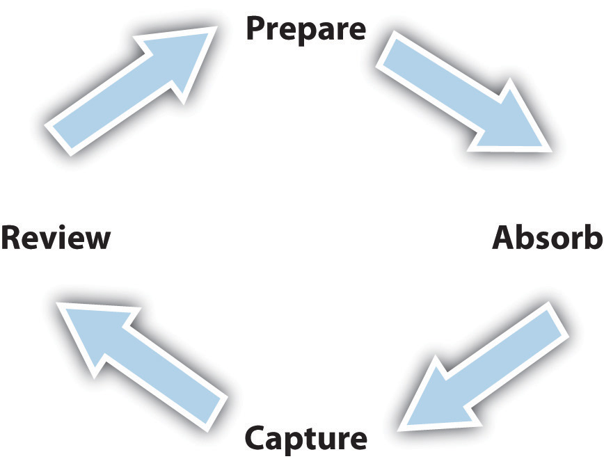

One of the first steps for becoming a successful student is to understand the learning process itself. Certain characteristics of effective learning, including the four-step learning cycle, are true of all people. At the same time, people have different learning styles. Understanding these processes is important for maximizing your own learning while in college.
Adult learning is different from learning in primary and secondary school. In high school, teachers often take much of the responsibility for how students learn—encouraging learning with class discussions, repeating key material, creating study guides, and looking over students’ shoulders to make sure no one falls behind. In college, most of the responsibility for learning falls on the student. You’re free to fail—or succeed—as you choose. This applies as well to how well you learn.
Learning an academic subject means really understanding it, being able to think about it in meaningful ways and to apply that understanding in new situations. This is very different from simply memorizing something and repeating it back on a test. Academic learning occurs most effectively in a cycle of four steps:
Think first about the different situations in which you learn. Obviously you learn during class, whether by listening to the instructor speak or in class discussions in which you participate. But you also learn while reading your textbooks and other materials outside of class. You learn when you talk with an instructor during office hours. You learn by talking with other students informally in study groups. You learn when you study your class notes before an exam. All of these different learning situations involve the same four-step process.
Figure 1.4 The Learning Cycle
One student rolls out of bed a few minutes before class and dashes across campus and grabs the last seat in the hall just as the instructor begins a lecture; it takes him a few minutes to find the right notebook in his backpack, and then he can’t find a pencil. He’s thinking about how he should’ve set his alarm a little earlier so he’d have had time to grab a cup of coffee, since he’s having trouble waking up. Finally he settles in his seat and starts listening, but now he can’t figure out what the instructor is talking about. He starts jotting down phrases in his notes anyway, thinking he’ll figure it out later.
Another student looks over his notes from the previous class and quickly glances back at passages he’d highlighted in the textbook reading. He arrives at class a few minutes early, sits up front where he can hear well, and has his notebook open and pencil out. While waiting for the instructor to arrive, he talks to another student about her ideas for the paper due next week in this class.
It’s obvious which of these students will learn more during today’s class lecture. One has prepared and the other has not, and they will experience a huge difference in their understanding of today’s topic. Preparing to learn is the first step for learning. The same is true when you sit down to read your textbook, to study for an exam, or to work on an out-of-class project. Partly you are putting yourself in the right mind-set to learn. But when you review yesterday’s notes to prepare for today’s class, you are also solidifying yesterday’s learning.
“Absorbing” refers to the actual taking in of new ideas, information, or experience. This is what happens at the moment a student listens to a class lecture or reads a textbook. In high school, this is sometimes the only learning step taken by some students. They listened to what the instructor said and “regurgitated” it back on the test. But this won’t work in college because learning now requires understanding the topic, not just repeating facts or information. In coming chapters you’ll get tips for improving in this step.
“Capturing” refers to taking notes. No matter how good your memory, you need to take good notes in college simply because there is so much to learn. Just hearing something once is seldom enough. You have to go back over the material again, sometimes several times again, thinking about it and seeing how it all fits together.
The more effective your note-taking skills, the better your learning abilities. Take notes also when reading your textbooks. You’ll learn methods for taking good notes in later chapters.
The step of reviewing—your class notes, your textbook reading and notes, and any other course materials possibly including recordings, online media, podcastsAn audio or video recording, such as of a class lecture, made available online; so named because podcasts were originally developed to be downloaded and played on iPods., and so on—is the next step for solidifying your learning and reaching a real understanding of the topic. Reviewing is also a way to prepare for new information and ideas. That’s why this is a learning cycle: the end of the process loops back to the beginning as you prepare for additional learning.
Reviewing is also the step in which you discover whether you really understand the material. If you do not understand something fully, you may need to reread a section of the book, talk it over with a friend in the class, or go see your instructor.
Different people have different learning stylesA person’s preferred approach to or way of learning most effectively.. Style refers to a student’s specific learning preferences and actions. One student may learn more effectively from listening to the instructor. Another learns more effectively from reading the textbook, while another student benefits most from charts, graphs, and images the instructor presents during a lecture.
Learning style is important in college. Each different style, described later in more detail, has certain advantages and disadvantages compared with other styles. None is “right” or “wrong.” You can learn to use your own style more effectively.
College instructors also have different teaching stylesThe preferred methods or techniques an instructor uses to teach students, often based on personal preferences, individual skills, and the norms of the academic discipline., which may or may not match up well with your learning style. Although you may personally learn best from a certain style of teaching, you cannot expect that your instructors will use exactly the style that is best for you. Therefore it is important to know how to adapt to teaching styles used in college.
Different systems have been used to describe the different ways in which people learn. Some describe the differences between how extroverts (outgoing, gregarious, social people) and introverts (quiet, private, contemplative people) learn. Some divide people into “thinkers” and “feelers.” A popular theory of different learning styles is Howard Gardner’s “multiple intelligences,” based on eight different types of intelligence:
The multiple intelligences approach recognizes that different people have different ways, or combinations of ways, of relating to the world.
Another approach to learning styles is called the VARK approach, which focuses on learning through different senses (Visual, Aural, Reading/Writing, and Kinesthetic):
You can take a free, self-scored online assessment of your VARK learning style at http://www.businessballs.com/freepdfmaterials/vak_learning_styles_questionnaire.pdf.
There are still more systems used by educators to describe the various ways in which people learn. All of these systems can help you learn more about how you as an individual person and college student learn best. You can use the online assessment in the “Outside the Book” section at the end of this chapter to learn more about your style.
Just knowing your style, however, doesn’t automatically provide a solution for how to do your best in your college courses. For example, although you may be a kinesthetic learner, you’ll likely still have textbook reading assignments (verbal learning) as well as lecture classes (listening). All students need to adapt to other ways of learning.
The following sections look at the key ways in which learning occurs in college classes and offer some suggestions about how to adapt your strengths for success.
Reading skills are critically important in college. Most classes involve reading assignments. Although many instructors may cover some of the textbook’s content in lectures or class discussions, students cannot skip the reading assignments and expect to do well.
If your personal learning style is verbal and independent—that is, if you learn well by sitting alone and reading—then you will likely not have difficulty with your college reading. Here are some tips to help maximize your learning:
If you have a different learning style, then you may need to give more attention to your reading skills. Always allow plenty of time for reading assignments—rushing makes it harder to understand what you are reading. Do your reading at times of the day when you are most alert. Find a quiet, comfortable place conducive to reading.
Try also to maximize your learning through your personal style. If you learn better by listening, for example, sit up front in lecture classes where you can see and hear the instructor better. If needed, ask if you can tape-record an instructor’s lectures and then listen again at a convenient time, such as when commuting to class or work. If you are more of a visual learner, sit in class where you can see PowerPointThe name of a specific software presentation program (within Microsoft Office) used in many educational and business settings to produce and deliver “slides” containing text and graphics to a group via a projected computer screen. slides and other visual presentations most clearly. Use a visual approach in your class notes, as described in Chapter 4 "Listening, Taking Notes, and Remembering". Check out whether video podcasts may be available for reviewing lectures. Try to relate all of these visual images to the textbook’s content when you’re reading an assignment. In addition, pay special attention to illustrations and diagrams in the book, which will further help you understand the written ideas and information. If you are more of an interpersonal learner, form a study group with other students and talk with others about the course topics. Take advantage of your instructors’ office hours to help clarify your understanding after reading assignments.
Listening skills are as important in college as reading skills. College students are expected to listen to their instructors in class and remember and understand what is said. In discussion classes, listening is important also for participating well in discussions.
If your personal learning style favors listening, then you may already be good at understanding class lectures. Chapter 4 "Listening, Taking Notes, and Remembering" provides tips to help you pay close attention, take good notes, and recall the information and ideas you have heard. Here are some more tips:
A “seeing” learner learns more effectively through seeing than through reading or listening. Some college courses include demonstrations and physical processes that can be observed. If you are a visual learner, work on developing your reading and listening skills, too, because you will need to learn in these ways as well. Here are some tips to improve learning related to seeing:
People who learn best by doing are often attracted to careers with a strong physical or hands-on component, which can vary from athletics to engineering. But these students may need to use other learning skills as well. Here are some tips to help maximize your learning related to doing:
Feeling learners focus on the emotional side of information and learn through personal connections. Too often they may feel that a college textbook or a class is “dry” or “boring” if it focuses exclusively on written information. In addition to improving their reading and listening skills, students with this style can enrich their learning by focusing on what they and others feel about the information and ideas being learned. Here are some tips to help maximize your learning related to feeling:
Many college classes tend to focus on certain learning styles. Instructors in large lecture classes, for example, generally emphasize listening carefully and reading well. Don’t worry, however, if these are not your particular strengths, for much of this book focuses on learning study skills and other college skills related to these activities. Take responsibility for your own learning, rather than expecting the instructor to help you through the subject in your own personal way. For example, if you are a visual learner but your instructor simply stands at a podium and lectures, then provide your own visual stimulation by sketching concept maps in your notes or by visualizing how information being presented might look in a pie chart or graph. For more information, see Chapter 4 "Listening, Taking Notes, and Remembering".
As you move further into your college curriculum, you will likely have more small classes with class discussions, demonstrations, group presentations, and other learning activities. Once you are in classes closely related to a career path that interests you, you will find your personal style more relevant to the kinds of material you will be learning.
Much learning in college also comes from interactions with others, who often have different learning styles. Be open to interacting with other students and instructors who are different from you, and you will find yourself learning in ways that may be new to you.
Finally, if a genuine mismatch is occurring between your learning style and your instructor’s teaching style to the extent that you may not succeed in a course, talk to your instructor privately during office hours. You can explain how you best learn and ask for suggestions about other resources that may help you.
Number each the following actions to put them in the correct order of the four steps of the learning cycle:
How would you describe your personal learning style?
__________________________________________________________________
Name an activity from which you generally learn very well.
__________________________________________________________________
Name a type of learning experience you may have difficulty with.
__________________________________________________________________
For the activity above, list at least two strategies you can use to improve your learning effectiveness when in that situation next time.
__________________________________________________________________
__________________________________________________________________
If you experience a situation in which your personal learning style seems to clash hopelessly with an instructor’s teaching style, what is your best course of action?